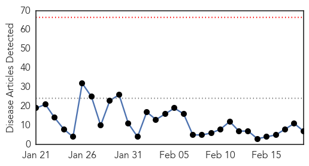

Influenza
30-Day Web Trend
0 alerts, 0 warnings

30-Day Twitter Trend
0 alerts, 0 warnings

Article Locations

Article Confidences

Top Articles:
- 0.982
- Don't Pay Extra For Your Swine Flu Test, Govt Wants To Regulate Prices
- 0.982
- Man, 33, dies of flu in Riverside County
- 0.978
- First Riverside County Resident Dies from Flu Complications...
- 0.904
- IDRI Announces $4M BARDA Cooperative Agreement To Establish Adjuvant Hub
- 0.751
- February 18, 2015 Archives
- 0.751
- February 18, 2015 Archives
- 0.530
- GSK won't be able to supply 2 million doses of flu vaccine promised for 2014-15
Top Tweets:
-
No tweets found for Feb 19, 2015
West Nile Virus
30-Day Web Trend
2 alerts, 0 warnings
30-Day Twitter Trend
0 alerts, 0 warnings

Article Locations

Article Confidences

Top Articles:
-
No articles found for Feb 19, 2015
Top Tweets:
-
No tweets found for Feb 19, 2015